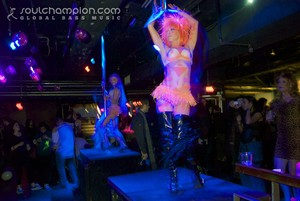

March 3, 2012, 10 p.m. - March 4, 2012, 2 a.m. at Machine Nightclub
(Comments)
Add to Google Calendar Add to Outlook/iCal

We've partied like there is no tomorrow. We prepared for all the carnage of the apocalypse. Instead we got a second chance. A chance to create a new world, to raise our faces to the sun, to breathe this new air, to reach out to our fellow human, animal or machine... A chance to finally embrace our differences and build a world unlike any other. We invite you to Genesis. Witness the beginning...
We will continue to build this new world in our 4th installment of Genesis - a party brought to you by Music Ecology, VJ Adrenochrome and Kate Van Rees.
A life was created at our last party and now the future inhabitants of our world are slowly brewing in their wombs waiting to be born. Studies show that fetuses can hear music which is why so many human mothers listen to the works of classical composers. We want to try and find out what would happen if we played loud bass music to our future offspring. A little nature vs nurture if you will...
Parties in charge of loud bass music for the night are
TONY GOODS (Sounds of Sumo / Kum Curek / dashexp.com | Seattle)
http://soundcloud.com/tonygoods
and
DJ ZOLA (LostinSound.org, Together | Boston)
http://soundcloud.com/lostinsound/
with support by Music Ecology residents
Tony Goods AKA Dash EXP
Having self-released three successful dubstep mixes (Dub Assassin Series), a 19-track all original mix, and putting out a steady flow of singles, EP's and remixes for notable future-thinking indie labels like Shift. Recordings, Sounds of Sumo, Hot N Heavy, Brap Dem, Betamorph and Phantom Hertz, Dash has showed his versatility in genres with tunes ranging from dubstep, jungle, drum and bass, house, garage and UK funky. The eclecticism of his rhythms lends to a frenzy on the dancefloor, and has bought him continued support and play from leading DJ's, producers and labels worldwide, as well as radio play on BBC Radio 1. This is what Juno downloads had to say about his most recent release "Friends":
"Review:
In its original form, "Friends" is a track full of glorious contrasts. At times, it feels like an emotion-rich, melody-heavy tribute to touchy-feely dancefloor classics. At others, it stimulates the hips and feet with bleep-laden rhythms pitched somewhere between tropical, future garage and post-dubstep beats. The deeper, more atmospheric "Nothing" redresses the balance slightly, before "Effed Up" drags us kicking and screaming towards the dancefloor with some particularly pulsating garage grooves. Of the six accompanying remixes, it's the unashamedly positive vibes of Daniel Klauser that really hits the spot - though Sleverance's retro-futurist rave-up is also worth a listen.
-Support from: Doorly, Starkey, Malente & Detboi "
DJ Zola
Zola is Charles Mazzola, a writer, inciter, and Resident DJ of the LiS/Use Your Head home party crew. He was captured by the Electronic Dance Music scene and while traveling abroad for several months, his heart stayed in IBIZA. Alas, he is a lover of all forms of music, especially the eclectic. Living, working, and attending as many shows as possible-spreading the word of amazing and underground music. Charles regularly plays established nights around Boston, NY and RI and with touring bands.
As always creative attire is encouraged!
We hope to see you on Saturday, March 3rd at
Machine Nightclub (Fenway)
1254 Boylston Street in Boston
"Fenway" or "Kenmore" stops on the Green Line
10 PM - 2 AM, 21+, $10 - includes admission to Factory with DJ Static and Volvox (https://www.facebook.com/events/380789775269099/)

Music Ecology is a Boston based event production collective formed in the summer of 2009. Our weekly Tuesday night residency at Wonder Bar a well as numerous events throughout the city have exposed Boston audiences to numerous local, national and international talent. Our upcoming events include
Filastine (3/27 - Wonder Bar)
Bird of Prey (4/3 - Wonder Bar) - as part of Together Boston (http://www.togetherboston.com/
Photek w/ MC Armanni Reign (4/7 - Machine) - as part of Together Boston (http://www.togetherboston.com/
For this and future events please visit http://www.musicecologyboston.com/
or find us on Facebook at http://www.facebook.com/MusicEcology
or follow us on twitter at https://twitter.com/music_ecology
check out live recordings from our Tuesday nights at http://www.soundcloud.com/music-ecology
Promotional assistance by:
LostinSound http://www.lostinsound.org/
and Forbidden Bass Crew https://www.facebook.com/groups/forbiddenbass
UnheardUV http://unhearduv.com/
BeantownBoogiedown http://www.beattownboogiedown.com
Machine Nightclub
1254 Boylston Street
Boston, MA (Fenway)
Get Directions
Archive
2014
2013
- December (1)
- November (4)
- October (2)
- September (5)
- August (2)
- July (4)
- June (4)
- May (3)
- April (5)
- March (5)
- February (6)
- January (4)
2012
- December (6)
- November (6)
- October (6)
- September (4)
- August (5)
- July (6)
- June (5)
- May (6)
- April (5)
- March (5)
- February (5)
- January (6)
2011
- December (5)
- November (5)
- October (4)
- September (5)
- August (3)
- July (2)
- June (4)
- May (5)
- April (4)
- March (6)
- February (5)
- January (4)
2010
- December (5)
- November (5)
- October (5)
- September (4)
- August (2)
- July (4)
- June (6)
- May (5)
- April (4)
- March (5)
- February (5)
- January (1)
Locations
- Brighton Music Hall (1)
- Good Life (1)
- Machine Nightclub (13)
- Middle East Corner (1)
- Middle East Upstairs (4)
- Phoenix Landing (1)
- Royale Boston (2)
- South Shore Music Hall (1)
- T.T. the Bear's Place (1)
- The Sinclair (1)
- The Stone Church (1)
- Wonder Bar (190)
- Wonder Bar - DOWNSTAIRS (2)
Feeds
RSS / AtomSubscribe to our Newsletter
Connect
Comments